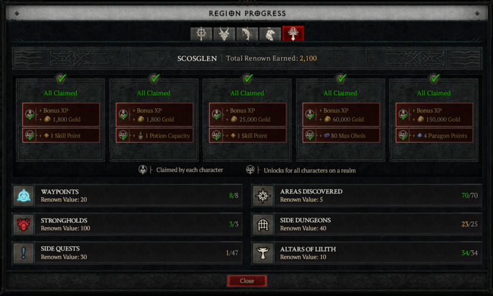
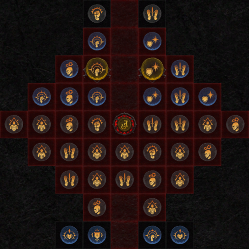
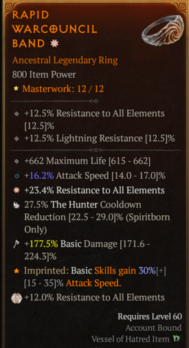

การเพิ่มพลัง (Powering Up) มุ่งเน้นไปที่องค์ประกอบที่มีความหมายที่สุดในการพัฒนาตัวละครของคุณ ไม่ว่าคุณจะทำกิจกรรมใด คุณจะสะสมวัสดุ ค่าประสบการณ์ อุปกรณ์ และทองที่จำเป็นในการสร้างตัวละครระดับ Endgame ที่สมบูรณ์แบบ เป้าหมายของเราคือช่วยให้คุณจัดการทรัพยากรเหล่านั้นได้ดีขึ้น
1. การเติมเต็ม Legendary Aspects
ในช่วงแรก คุณมักจะยังไม่มีไอเทม Legendary ครบทุกช่อง โดยเฉพาะชิ้นที่สำคัญต่อ Build เคล็ดลับในการหาไอเทมที่คุณต้องการมีดังนี้:
Season Journey
Season Journey มอบรางวัลเป็นไอเทม Legendary ที่ตรงตามสายสกิลของแต่ละคลาส การได้รับไอเทมที่การันตีเหล่านี้จะช่วยให้คุณเริ่ม Build ได้ง่ายขึ้นมาก
Codex of Power
ในปัจจุบัน Legendary Aspects ทั้งหมดสามารถบันทึกลงใน Codex of Power ได้ เพียงแค่นำไอเทมที่ไม่ได้ใช้ไป Salvage ที่ช่างตีเหล็ก พลังนั้นจะถูกบันทึกไว้และนำไป Imprint ลงในไอเทมอื่นได้ไม่จำกัดครั้ง
Murmuring Obols & Tree of Whispers
ใช้ Obols สุ่มไอเทมเฉพาะส่วนที่ Purveyor of Curiosities หรือทำภารกิจ Tree of Whispers เพื่อเลือกรับกล่องอุปกรณ์เฉพาะส่วน เพื่อหา Aspect ที่ยังขาดอยู่
2. การอัปเกรด, การใส่ Socket และการ Enchant อุปกรณ์
เมื่อคุณเริ่มมีอุปกรณ์ระดับที่พอใจแล้ว การลงทุนทรัพยากรเพื่ออัปเกรดเป็นสิ่งจำเป็น:
- Tempering: การเพิ่ม Affixes พิเศษลงในอุปกรณ์ (Rare ได้ 1 อย่าง, Legendary ได้ 2 อย่าง) เป็นวิธีเพิ่มพลังที่แรงที่สุดในช่วงแรก
- Masterworking: ระบบอัปเกรดขั้นสูงที่เพิ่ม Stat ทั้งหมดของไอเทม และจะสุ่มเพิ่มโบนัสพิเศษ 25% ที่ระดับ 4, 8 และ 12
- Enchanting: การรีโรลค่า Stat ที่ไม่ต้องการที่ Occultist เพื่อให้ได้ค่าที่สมบูรณ์แบบที่สุด
3. การเก็บสะสม Renown
การทำภารกิจชื่อเสียงใน 6 ภูมิภาคจะปลดล็อกรางวัลที่ใช้ร่วมกันได้ทุกตัวละคร (Account-wide) โดยเฉพาะ Skill Points และ Paragon Points
Altars of Lilith

การตามหาแท่นบูชาลิลิธมอบโบนัสถาวรทั้งค่า Attributes, เลือด และความจุ Obol ซึ่งสำคัญมากในการเพิ่มพื้นฐานความเก่งของตัวละคร
4. การหาและอัปเลเวล Glyphs
Glyphs มอบพลังมหาศาลบนบอร์ด Paragon ของคุณ:
- Acquiring Glyphs: ดรอปได้สุ่มจากกิจกรรมต่างๆ ในระดับความยาก Torment
- Leveling Glyphs: คุณต้องลง The Pit เพื่ออัปเกรดเลเวล Glyph
- จุดเปลี่ยนสำคัญ: เมื่อ Glyph ถึงเลเวล 15 รัศมีบนบอร์ดจะกว้างขึ้น ทำให้ครอบคลุมจุด Bonus ได้มากขึ้น

5. การหาไอเทม Ancestral และ Unique
ระดับความยาก (Difficulty) เป็นตัวกำหนดระดับไอเทม:
- ระดับ Standard: ดรอปไอเทมปกติ
- ระดับ Torment: เริ่มดรอป Ancestral Legendary และ Mythic Uniques

6. บทสรุป
ใช้ระบบ Codex of Power ให้เกิดประโยชน์, อัปเกรดอุปกรณ์ด้วย Tempering และ Masterworking เสมอ, และอย่าลืมเก็บ Renown ให้ครบเพื่อแต้ม Paragon ฟรี เป้าหมายสูงสุดคือการไต่ระดับไปสู่ Torment เพื่อหาไอเทม Ancestral ที่ดีที่สุด!